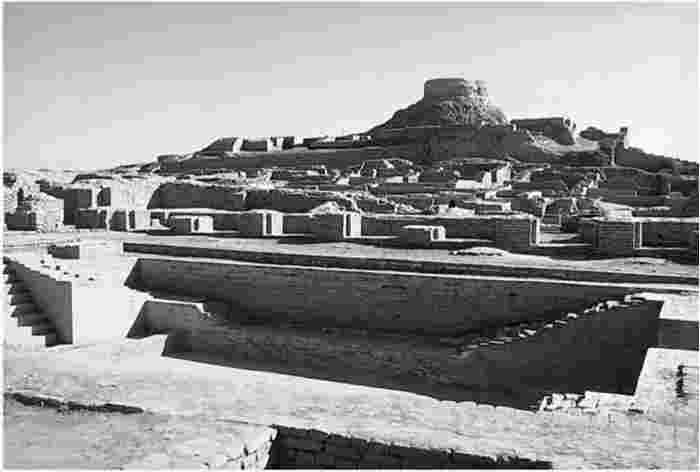
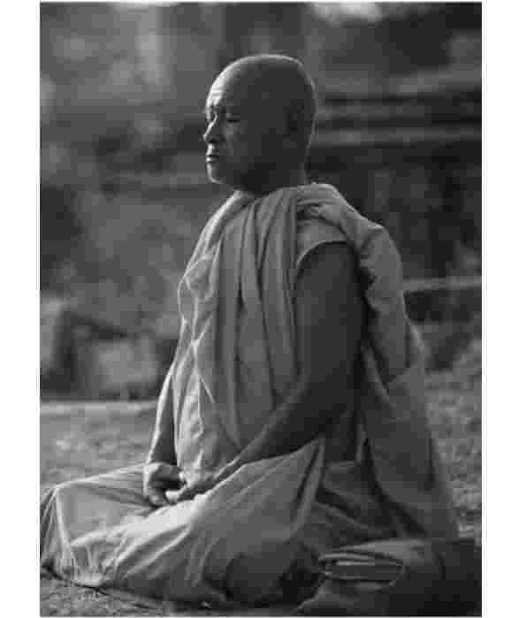
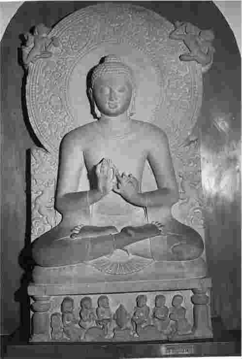

婆罗门等级像恪守祭祀仪式那样捍卫着他们的宗教特权和等级观念，这使得很多人觉得其生活前景始终在婆罗门等级的压迫和束缚下。他们于是就在社会和宗教的道路之间选择其一，逐渐被统称为隐修者（即巴利语s＇ramana，也称沙门）。他们反对一切与婆罗门祭司的权威以及说教有·关的事物。不过，人们更倾向于将他们作为与“在家修行者”对立的一方看待，因为在家修行者的地位是婆罗门等级为了延续传统所设定的。在家修行者不仅有责任参加祭祀，还要进行经济生产，繁衍后代，保证血统的纯正。与其相对，隐修者却四方游历，各处化缘，坚守独身与禁欲。他们中间有些人会因为接受和认同某一首领所奉行的教义和见解而形成小团体，但多数人仍坚持独立孤行。还有许多隐修者奉行严苛的苦修，让自己承受极端的寒冷、饥饿、干渴、痛苦的肉体折磨以及其他各种克己的磨炼。这般苦行生活对他们隐修者来说目的是明确的，他们认为通过这样非常规的方式集中思想可以达到精神上的觉悟。
年代表
约公元前2000年——：吠陀祭祀传统。
约公元前800—公元前500年：早期《奥义书》。
公元前500年前：婆罗门传统中崇礼派与灵智派两教派分支并存。
公元前5世纪社会背景：与婆罗门教的在家修行者相对的是隐修者——游方僧、托钵僧、禁欲的行者，他们都探寻着关于世界和自我的真理。隐修者反对婆罗门教的所有教规。
约公元前485—公元前405年：佛陀在世。据佛教典籍记载，佛陀反对婆罗门的教规、教义及其权威，但同时他在隐修者的教义中也未发现令其满意的解脱之道。正是基于个人顿悟性的思索，他提出了介于出家修行与居家修行二者之间的中道 。
我们无法确知在公元前5世纪以前的北印度，那个婆罗门教世界观占主导地位的环境里，隐修者何时以及怎样成为社会生活一个显要的组成部分。20世纪，印度河河谷流域一个未知的上古文明的发掘工作，证实了远在雅利安人到来之前这里已经存在一个繁荣的本土文明。或许隐修者就是这种本土传统的继承者，也就是说，隐修者所选择的道路与其所奉行的教规可能并非源于雅利安人的传统。但是无论属于何种起源，情况可能是：当婆罗门信徒中某些人试图将祭祀仪式的目的与程序变成自己内在思想的一部分时，他们也在试图规避某一既定社会结构中有关教徒的种种束缚。情况也可能是这样：他们试图将祭祀内化的倾向，其本身也许是由接触本土惯例所激发的。
我们所确切知道的并可用各种资料互相印证的是，直到婆罗门传统接纳《奥义书》中所记载的新教义的时候，当时存在着众多的逍遥派僧人，他们有相当数量的人在独自探索他们个人对宗教哲学问题的解答。这些问题本身在很多方面都与吠陀中的思辨性内容和《奥义书》中所提到的观点有所关联。这也就是说，隐修者们并不是在寻求另外一套真理，他们只是以自己的方式而非婆罗门所倡导的方式来寻找答案。事实上，所有这些隐修者都是想通过对“自我”本质的发现，来完成对世界本质和人类本性的认识。
我们的原始资料表明，当时印度存在着各种各样的有关自我和世界之本质的理论，其侧重点各不相同，或强调其中之一，或两者并重。一部早期佛经中关于自我列举的问题就有下面这些：
随后即给出推论性的答案：
（《阿含经》中部I，8）

图4摩亨佐·达罗遗址一瞥
对自我和世界问题的思索有如此之多，以至于各种可能的思考被汇集成佛经中的一种表述：
（《阿含经》相应部II，223，释义）
从以上及其他一些概览性的资料中，我们可以归纳出大体的思想趋向。一些人持坚定唯物论的观点，他们认为人是有限的宇宙和短暂现世世界里的肉体存在。另一些人则认为，在人的生命中也可能存在某种与肉体相关联的非物质的自我精神，只不过一旦肉体死亡，精神便随之永远地消失。持这种观点的人在早期佛经中被称作灵魂寂灭论者，即认为死亡意味着自我精神的“寂灭”。但无论是灵魂寂灭论者还是坚定的唯物论者都未能洞悉认真对待以下观点的重要性，即因果业报的宿命法则掌控着人类。不过，许多（或者说是大多数）隐修者则把自己置身于一系列的生命体验中去诠释他们的理解。与婆罗门教徒一样，他们中的有些人认为自我精神是永恒不变的，这些人又被佛教徒称作灵魂不灭论者。当然还有一些人不承认灵魂不灭，但他们确信生命存在着某种延续性。然而，所有这些人都认为现世的所为会影响来世，而且还相信寻求这些问题答案的全部意义在于，这种关于自我的本质与本体环境的具体认知都会对从转世中解脱产生影响。正因如此，寻求问题答案才显得如此重要，也正是这类问题才使他们孜孜以求。
掌握上面这一点很重要，它是我们所试图理解的那个时代的一个关键性内容。如果换一个稍微不同的角度来思考，我们复原出来的印度社会环境的图景可能会更加清晰。总的来说，我们看到的是这样一个图景：人们的生活方式和关注点与他们各自的世界观直接相关。
一方面，一部分人仍承袭古老的吠陀教献祭中的婆罗门传统，其祭祀仪式的履行与宇宙秩序的维持有着直接的联系。这种宇宙即使不完全是经验性的，也可以肯定是多样而且真实的。之所以对祭祀仪式的精确与否极为关注，是因为今世祭祀的所为与来世的果是相关联的。虽然在当时，婆罗门教这一古老传统与以《奥义书》和苦修学说为代表的其他新兴学说相比显得渐失活力，但它却已经成为当时社会正统思想的代表者，它所建立的社会准则一直影响到现代。不管其他的一些替代思想如何声称自己是至高无上的，婆罗门教的存在和影响都不能被轻易地抹去。
其他的教派如唯物论者和灵魂寂灭论者，都坚持认为只应关注此时此地的世界。他们把捍卫立场作为自己的首要任务，反对研习仪式者和非唯物论者的言说，斥之为谬论，并嘲讽其惯例。
与上述派别相对的另一派别则认为，生命受业报轮回支配，死而复生，生而复死，世界远不是其表象所显现的那样。他们所关注的是认识世界在现实中的确切构成和众生在其中的位置，这不仅使他们得以崇高地宣称自己在探求形而上的真理，也为他们了解摆脱转世轮回之苦的途径提供了存在意义上的必要性。若想达到脱离因果业报的最高理想，他们首先要认识自我的本性。因此，他们斩断尘缘出家修行就是要认识自我。
公元前485年前后，一个名为乔达摩·悉达多的人出生，他就是后世所称的佛陀。“佛陀”本意是“觉醒”，隐喻佛陀觉悟的那一刻。佛经中将佛陀的觉悟描述成洞见真理（又称三觉圆满），其过程可以理解为类似于人沉睡初醒的那一刻。这一点使我们将注意力转向佛教徒的修行过程，也就是从无知到有知，这一点与婆罗门的奥义派、许多苦行僧的观点有共同之处。无知（无明）是滋养生死轮回的主要土壤；人生短暂，却被无尽的烦恼纠缠。要摆脱转世轮回就必须摆脱无知（无明）。正是因为这些传统中早期的传教者声称已经掌握了关于宇宙人生的真知，此后才出现了如此丰富、各种各样的形而上学理论。
尽管根据佛教教义和圣徒传记叙事文学改编的流行读物随处可见，我们却没有佛陀早年生平的确凿证据，只知道他出生于迦毗罗卫城（今尼泊尔境内），其家庭很可能是一个王贵世家。经书记载他三十岁光景时出家，去寻求关于众生命运之本质的答案：众生为何此般存在？为什么人生难逃疾病、衰老与死亡？这一切都不可避免吗？能够有所改变吗？人确实能避开这种境遇吗？
无论佛陀出家前是否已经对前文叙述的教义有所了解（我们也无从得知），早期的佛经告诉我们，佛陀一踏上寻道之路，就遇到了很多持不同见解的人。事实上，除耆那教经书外，早期的佛经是我们获取关于那一时代各种思想的最重要的信息来源。在求解人生大问题的过程中，佛陀很乐于和志趣相投的僧人交往，学习他们认为与人生境遇及其改变有关的知识。佛陀似乎花了好几年的时间专门听别人传道、向别人学习、检验别人的理论，在各种规则、惯例中仿效他们。但最终佛陀发现别人的理论都不符合他寻求的解脱之道，于是最后决定采用自己的方式寻求对人世更为深刻的理解。
运用一种深刻的冥思，即后来传道中讲的“禅定”，佛陀声称洞悉了三界因果，发现了众生本相以及众生之所以如此的原因。他还声称通过洞悉三界因果，已从无尽轮回中解脱出来。首先，他能看到自己的诸多前世，以及各世的业如何影响下一世的情势：也就是说，他能够看到自己的轮回转世。其次，根据因果业报，他看到了其他生命如何轮回转世。因此，佛陀所宣扬的轮回说和因果业报说不是简单地接受当时流行的世界观，而是基于自己的亲身体验。最后，他悟出了如何从内心和观念中根除那些使自己深深受制于俗世因果轮回的因素：欲爱、贪恋生、对现实本质的无明和虚妄我见。
根据经文（见上面方框内容），在解释第三条觉悟之前，佛陀用一个四重表述来概括他的所见：（1）人的生存具有某种内在的本质特征；（2）特定的因滋生转世轮回；（3）停止转世轮回是可能的；（4）存有终止轮回的途径。如果想从转世轮回的羁缚中解脱，必须洞察、领悟人生情势的关键性问题。此教义是佛法的基础内容，佛陀在瓦拉纳西的鹿野苑首次传道于他人讲的就是这一内容，即四圣谛。
四圣谛的关系简单清晰：X是Y的果，Y灭亡则X随之灭亡，这里X指众生的本相。用概念性的语言来表达四圣谛并不容易，一方面是因为四圣谛有很深的隐义，另一方面则是因为第一圣谛中定义众生本相的巴利语词汇dukkha的含义十分模糊。dukkha以前常被译为“痛苦”、“疼痛”、“病痛”，但是现在人们广泛地意识到这样的翻译给佛陀的人生观错误地附加了令人难以接受的消极色彩。或许“不圆满”是更贴切的翻译，“不圆满”在概念上将dukkha这个词与佛陀的诸法无常这一说法联系起来。佛陀的观点和当时奥义派的观点是截然对立的，后者认为宇宙尽管有着明显的多样性，但仍然是一个永恒不变的实体性唯一存在，人可以洞悉其本质。佛陀认为诸行无常，因为诸行无常，生命才最终不能圆满（甚至善行和善果也不能持久），因而这和奥义派所说的人能够达到极乐世界和永生是相对立的。四圣谛被认为解答了为什么生命短暂带来的不圆满是轮回众生的根本特征。人不愿接受人生短暂的事实，因而不断欲求诸事——青春、健康、爱情、财富等等——获得永恒。人的欲求注定得不到满足，所以才有不圆满状态的无止无休。在重申第二圣谛时，佛教指出，正是欲爱和功利心推动因果报应这一循环往复的过程。

图5禅定中的僧人
佛陀的觉悟
“我心智专注、澄明、纯净，内心无忧，身体轻柔，心性集中，努力思索如何根除‘轮回之势’。我明白生死轮回是人生第一谛，知晓轮回如何开始、轮回可以终止并如何终止。我知道万物因轮回而缘起，我看到他们的发生，他们的终止，以及终止的方式。由此所见所悉，我的心灵从俗世的欲爱中解脱出来，获得自由；我的心灵从不断追求欲爱的束缚中解脱出来，获得自由；我的心灵从虚妄我见中解脱出来，获得自由，我的心灵从无明之境解放出来。我肯定我已脱离轮回重生之苦。我做我之所需，做我之必需，我不再有轮回生死。”
（《毗奈耶经》III，4，释义）
（另见《阿含经》中部I，23，《阿含经》增支部II，211；IV，179。）

图6佛陀传道像
佛陀的教诲
四圣谛
（《阿含经》相应部V，420，释义）
“涅槃”原意为“火被吹灭”，这里指因果业报的终止。
缘起
（《阿含经》相应部II，25）
（《阿含经》中部III，63，样例）
存在的三个特征：
（《法句经》，277－279，样例）
我们所接触的早期佛教的重要教义采取了模式化的语言形式，这说明早期的佛教卫道者用诵经这种口头记忆方式将佛教传统传于后人，直到约公元前40年才得以用文字形式记述下来。
人无休止地欲求得不到的事物是因为人们对世界实相的本质无明。事实上，处于诸世循环中的一切事物都受另外一些事物的限定。佛陀在他的另外一个重要教谕中说明了这一点。依佛陀的说法，万物存在都有“缘起的关系”，即所谓的“法”和“常”。这一法则适用于世间一切事物——无论是物质的还是精神的，肉体的还是观念的，具体的还是抽象的，感官的还是非感官的——万物都是相对的存在，无一例外。其实这也就是万物不能永恒存在的根源。
缘起是一种深奥的基本教义。缘起不是指万物不存在，而是指万物存在的方式有别于“存在”和“不存在”。存在意味着“独立完整”，不存在则意味着“未发生”。佛陀的“缘起”说（“相对的存在”）是取其中间道路，即介于“存在”、“不存在”、“存在又非存在”和“既非存在又非不存在”之间。我们上面已经看到的这一反逻辑表述，正是被用来吸纳和反对其他宗教派别在所采取的形而上学立场方面可能发生的一切变动。
佛陀的“中道”
佛陀说，他的道是介于在家修行者和隐修者之间的中道，明显地表现在三个方面：
1.佛教僧侣团体既不完全赞同也不完全反对社会等级制度，僧侣的生活既与社会分离，又与俗人有牵连。
2.僧侣们每天的戒休和生活介于家庭的感官之乐和苦行僧的禁欲之间。他们也坚持独身，但是他们认为健康的身体是功德圆满的必需，因此生存的其他基本欲求得以满足。
3.缘起的哲学并非是将关于存在与非存在的概念简单地组合，而是在他人提出的本体论的所有可能排列中走中间道路。
基于“缘起”说，人们经常认为佛陀“无我”的思想同奥义派婆罗门以及其他派别的思想是直接对立的。这一观念是源于巴利语“无我”的使用。因为“无我”（巴利语为anattā，梵语作anātman）给“我”（巴利语为attā，梵语作atman）加了一个否定的词缀。正如我们已经看到的，“我”是除佛教以外当时印度其他宗教派别的中心议题。居于统治地位的婆罗门教根据《奥义书》宣称，对于生命永恒与宇宙本质的觉悟是解脱之道，而佛陀针锋相对地提出“诸法无我”。很多佛教徒和学者都一致将“无我”理解成一种对“自我”的根本否定。
近些年来，学术界已经指出“诸法无我”指的是一个普通概念，并不是从属性的。问题的要点在于，如果万物都是相对缘起于存在与非存在的所有排列组合之间，那么一切事物的存在方式——诸如音符、脚指甲、想法、笑声、气味、猫、树木、椅子、石头等的自我——在普遍意义上就都是相同的，这里的相同不是因为他们都是“非存在”。事实上，非存在是被明确否定了的。由于其从属含义，“无我”的字面意思可能迷惑了对手。佛陀否认的不是人的自我存在，而是任何独立个体的存在，这一观点反对“自我的恒在”，同时也对“自我不存在”这种说法提出怀疑。
这种怀疑得到了以下事实的支持：佛陀要求人们不要在关于自我或世界的问题上采取任何这类本体论主张。他说，所有的这类观点都是虚妄我见——它们深深地遮蔽了事物缘起的本质，要达到“正见”必须将其先行根除。佛陀自己也拒绝回答这类问题，当被问及前文中的“四重逻辑”表述时他选择了沉默，这些问题后来被称为“佛陀未回答的问题” [1] 。佛陀的传道方式与同时代的人以及大部分其他传道者有很大不同，他没有留下任何当时关于自我与世界的本体论状态的思考，至少没有直接留下。佛陀教导人们，要想“看到世间万物的本来面目”，就不要纠缠于那些本体论问题，而是要调动自己的认知能力。
这些内容在佛经中被称为事物的相互交叠的五重结构，即五蕴（梵语的khandhas，英语中并没有与之对等的词）。如果对话者的注意力分散到其他地方，佛陀就会不断提醒他先去理解五蕴的生灭。此外，最重要的是，早期佛经中反复强调是五蕴导致了不圆满——第一圣谛所确认的人生本质。因此五蕴与不圆满的联系揭示出：不圆满的根源不仅仅在于人内心不满足的心理状态，还在于一点，即必须从人的认知结构的角度探究众生本性。此即个人获得体验的必经方式，如果一个人事先不了解获得体验的方式或对此毫无概念，他就不可能思考也不可能认识任何具体事物。
在“宗教”层面上，研究人的认知结构的目的是要理解这种结构的通常状况与人的欲求之间的影响关系，因为欲求反应在正常情况下是受认知过程支配的。但事实上，从本相来看，这种认识是错误的。尤其是，当没有正确理解缘起时，人们会作为独立的欲求者持续作出回应，怀抱着对不同目标的个体欲望。通过这种方式，无明和欲爱一起推动着因果业报循环下去。相反，只有认识到对独立和脱离的感知都是虚妄，放弃无明，欲爱才会逐渐萎缩、消失。
从“哲学”角度看，这一教义旨在帮助人们将注意力从本体论转移到认识论上来。也就是说，在热切的形而上学质疑以及关于自我和世界的本体论理论中，佛陀声称每个个体都有自己的主观认知过程。个体无法跳出这一过程来弄清或检验过程外部的事件，但是还是可以理解认知的发生过程。这就涉及个体对这一过程如何塑造我们体验外部世界之方式的认识。下面的经文表明了认知体系如何将“原始”的感觉信息逐步转变成可界定的、精练的复杂分类，整个过程意味着“变唯一为多样”（《阿含经》增支部II，161）。
认知的过程
（《阿含经》中部I，111，释义）
上面这种形式也适用于听觉、嗅觉、味觉、触觉和思考（上述五类和视觉一起在印度被佛教和其他教派称为“六感”，其中“思考”是非感官性的精神活动）。
再论缘起
（《阿含经》相应部IV，93，释义，斜体字为笔者所加）
从经书未予言明的这条教义中能够得到两个暗示（其实经书中点明的内容极少）。其一，如果是由感知系统来处理所有的经验性资料，缘起结构便也是由人的感知系统组成：主观体验过程是个人一切感知的来源。这不仅意味着主观性与客观性之间有直接联系，而且表明众生轮回的缘起现象之所以是暂时的，是因为缘起本身的体验性。这一暗示在后期的佛教中得到了充分的阐释和探讨（尤其是在瑜伽行派中），但在早期佛教中，这一点很大程度上被忽视了。
其二，如果认识宇宙人生真相的焦点集中于理解认知的本质而非事物的本质——后者可以说是不受我们认知能力影响的，那么结论就是：一个人的所知与其自我无关。无论一个认知主体的性质和所处的本体位置如何，它都无法将其本身客体化从而被其自身认识。人们便是这样解读“存在的三个特征”（见44页方框中内容）中最后一条“诸法无我”的，其含意在很大程度上依然隐而未显，因为有一种对立的观点认为无我说就是指“没有自我”。
佛陀在很多方面对他人观点的批评十分激烈。如果他的“无我”教义宣扬的是无“我”，单单这一点便至少与处于统治地位的婆罗门教的主张（来自《奥义书》）完全对立；如果“无我”的本义是人们所理解的“一切能认知的都不是我”，那么佛陀否定的在很大程度上便不仅仅是婆罗门教的统治思想，还包括同时期其他大多数教派的理论基础。总之，佛陀在宣传自己的缘起学说时断然拒斥其他教派所持的各种本体论立场。
然而，在理解佛陀的各种学说时，须记住其中重要的一点：在佛陀的时代，其传道以及反对其他教派的目的完全是为了帮助其他人获得正见、从人生的兴衰轮回中解脱出来。人们在阅读佛经时总能感觉到这种意图，忽视或遗漏这一点都是对佛经教义的传承方式的歪曲。佛陀之所以费心削弱婆罗门的势力，不是因为他希望在某一哲学争论方面获胜，而是因为他认为婆罗门教所主张的排他性和至高权威性会危及人们的幸福。此外，他认为婆罗门教的教义依赖的是传统而非自己通过体验获得的认知，因而是极其不可靠的，有时甚至会出现自相矛盾：他看不出人们有任何理由去相信那些没有亲身体验的传道者的说教。佛陀同样反对它们的妄自尊大和对他人解脱之道的漠然态度。他指出，一切与神职人员有关的礼仪行为都毫无目的，因为业果报应法则植根于人的内心，除了自己没有其他人能够接近。佛陀还认为，将精力花在精确地记忆宗教戒律上，并将某种语言尊为神圣、拒不外传，就如同只注重声音和话语的细枝末节而不去理解存在本身的结构。佛陀指出，真正重要的应该是精神而不是文字，是整体而不是细节，是一个人的理解而不是这个人的记忆。
早期佛经的风格更接近“宗教”，而不是“哲学”。早期佛经中那些在今天很容易引起知识阶层关注的哲学问题，在当时却是与生存密切相关的话题，而不是抽象的思辨。事实上，佛陀和他的追随者以及同时代的寻道者们一定会对我们今天将他们的思想高度理智化感到吃惊。公元前5世纪的印度不过像一个坩锅，各种不同哲学派别都从中融合出各自的思想和方法论，并建立起相互的关系。此外，正是从这一世纪开始，一个教派要想扩大其影响就必须更多地依靠系统性的主张来提高自身的可信度。虽然公元前5世纪各教派并不需要多强的理论性来强化自己的学说地位，但不久以后，正规的各派教义之间便为争取优势、获得认同展开了竞争，那些出于早已存在的宗教传统的要求或者仅出于实用救世所传播的内容，其教义也获得了更为学术化和理论化的表达和阐述。